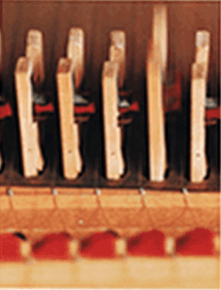
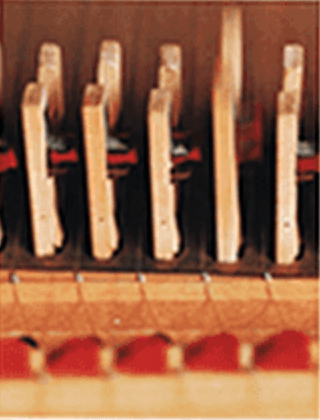

Braun HiFi Steuergerät audio 300
In der modernen Aufnahmetechnik ist keine Mühe zu groß, kein Aufwand zu kostspielig, um auch allerletzte Feinheiten einer Interpretation zu erhalten.
Demgegenüber gibt es aber nur wenige HiFi Geräte, die es fertigbringen, den ganzen Nuancenreichtum wieder vollends hörbar zu machen.
Ein Gerät mit diesen Fähigkeiten ist das neue “audio 300”, eine Kompaktanlage mit ungewöhnlicher technischer Ausrüstung und einem formalen Konzept, das Braun höchste internationale Auszeichnungen eintrug.

 
